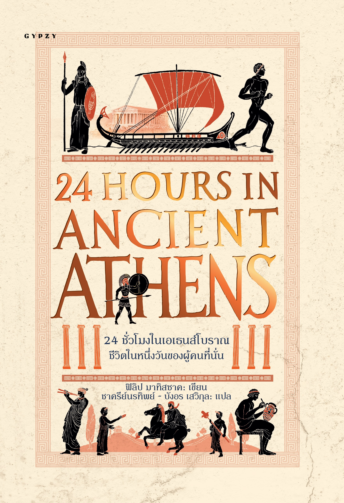
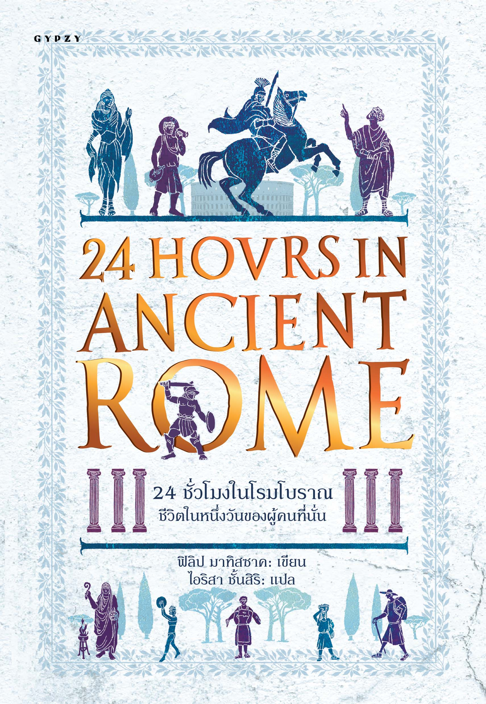
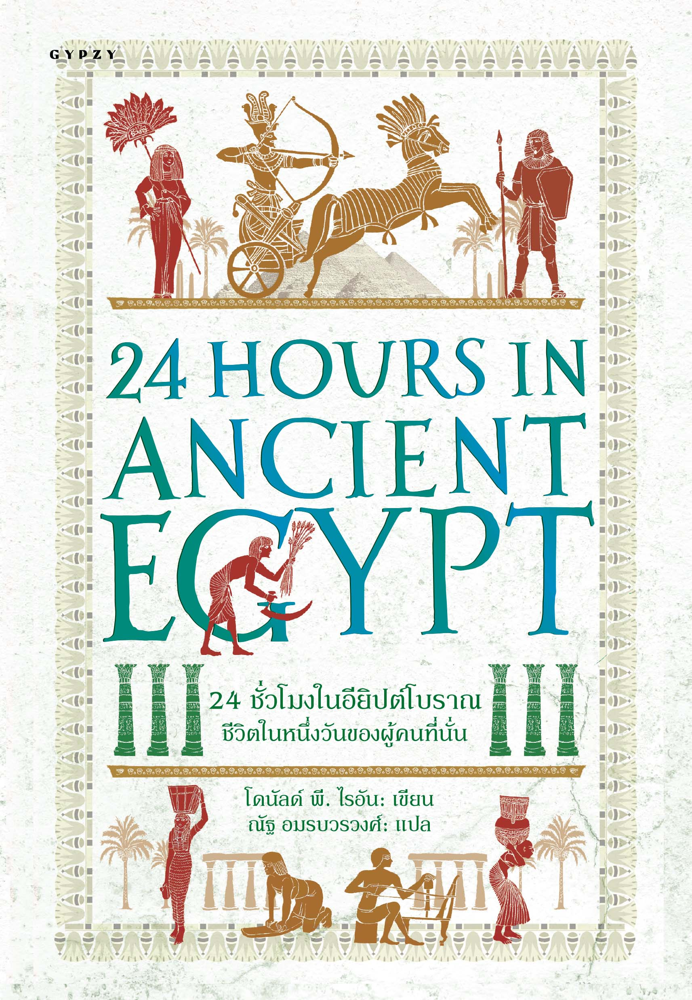
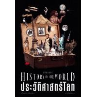
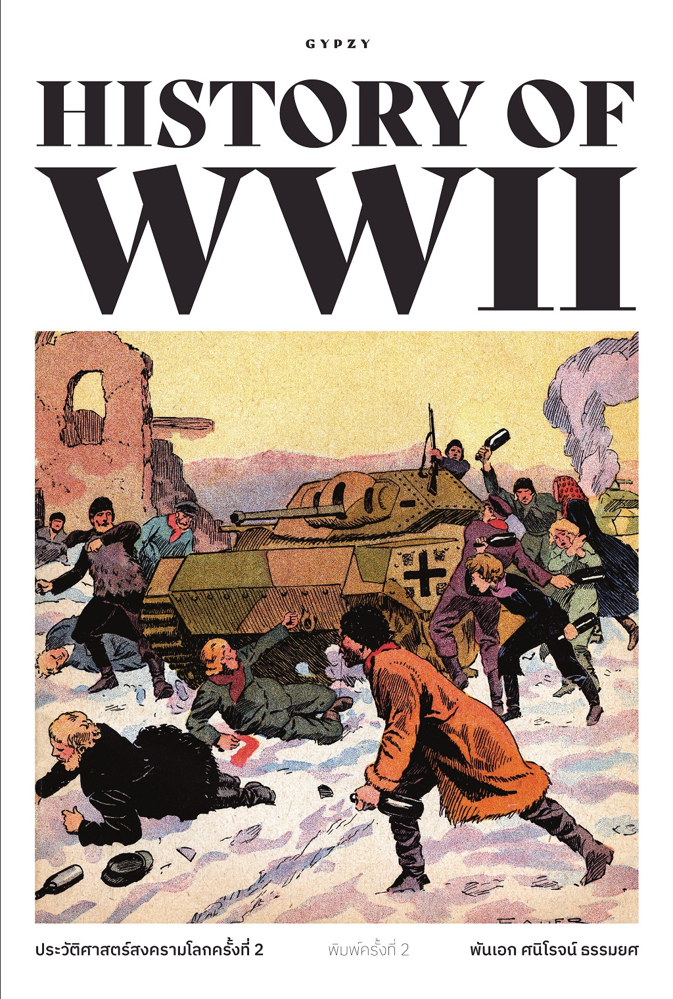
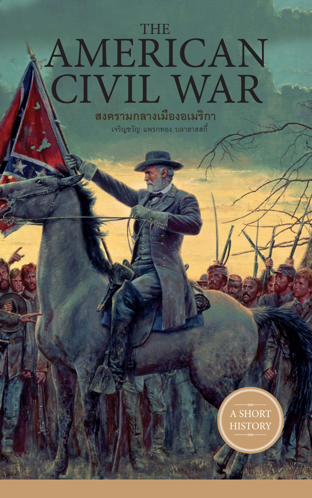
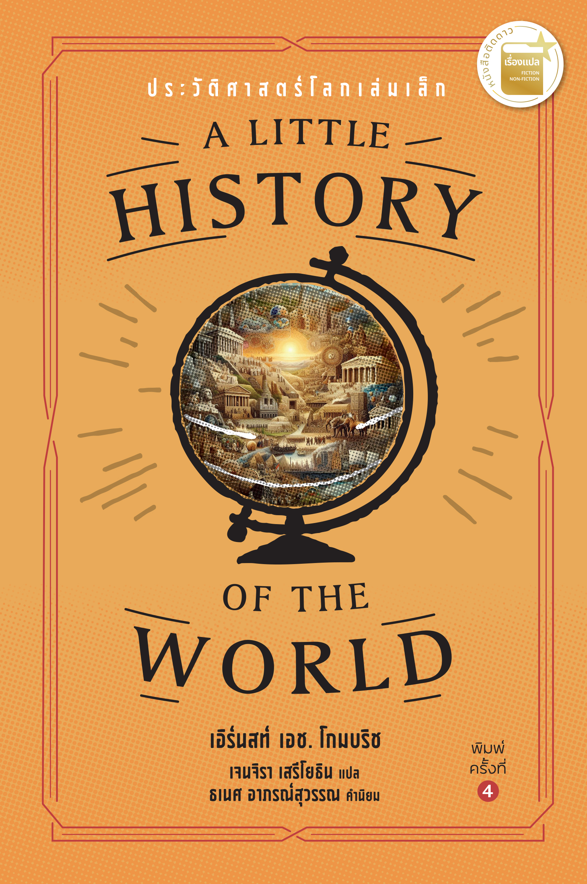
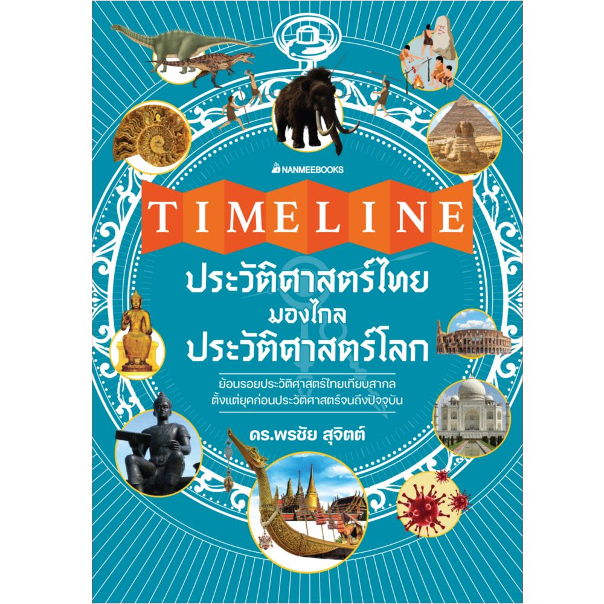
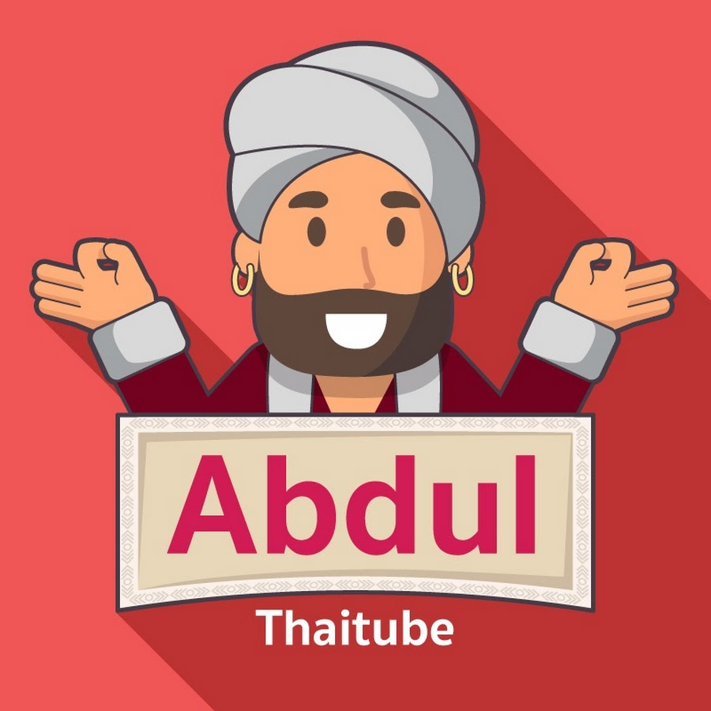
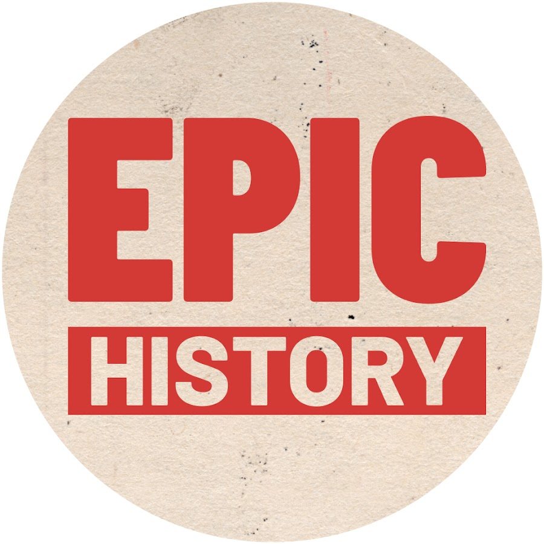

หนังสือประวัติศาสตร์ที่อยากแนะนำ
ต่อไปนี้จะขอแนะนำหนังสือประวัติศาสตร์ที่น่าสนใจ สำหรับเพื่อนๆที่ต้องการศึกษาประวัติศาสตร์ หรือหาหนังสืออ่านเล่นเวลาว่าง จะสะสมหรืออะไรแล้วแต่วัตถุประสงค์ และเราขอเป็นช่องทางในการสนับสนุนร้านหนังสือและผู้เขียนให้ผลิตผลงานดีๆต่อไป
ประวัติศาสตร์โลกฉบับออกซฟอร์ด (พร้อมภาพประกอบ) : The Oxford Illustrated History of The World
ราคาประมาณ 750 บาท
เล่มนี้ครอบคลุมตลอดหน้าประวัติศาสตร์ของมนุษย์ มันคือการรวมตัวกันของนักประวัติศาสตร์ระดับโลกมากมาย โดยมี "เฟลิเป้ เฟอร์นานเดซ-อาร์เมสโต" เป็นหัวเรือนำทางในการเล่าเรื่องราวของมนุษยชาติกว่า 200,000 ปี ตั้งแต่จุดกำเนิดของเผ่าพันธุ์โฮโม เซเบียนส์ ไปจนถึงศตวรรษที่ 21
ผู้แต่ง : เฟลิเป้ เฟอร์นานเดซ-อาร์เมสโต และคณะ
เสำนักพิมพ์ : ยิปซี
ประวัติศาสตร์โลกจากแผนที่สิบสองฉบับ A History of the World in 12 Maps
ราคาประมาณ 695 บาท
หนังสือเริ่มต้นที่ภูมิศาสตร์ของทอเลมีและปิดท้ายด้วยแผนที่ของ Google Earth ซึ่งสำรวจโลกทั้งใบด้วยระบบดาวเทียม บรอตตันสืบค้นแผนที่โลกนับสิบฉบับจากทั่วโลก ซึ่งปรากฏขึ้นในช่วงหลายศตวรรษที่ผ่านมา เพื่อสืบสาวราวเรื่องความเป็นจริงทางภูมิศาสตร์ตลอดเส้นทางอันทอดยาวสู่ยุคปัจจุบันของเรา
ผู้แต่ง : เจอร์รี บรอตตัน
สำนักพิมพ์ : ยิปซี



หนังสือชุด 24 ชั่วโมงใน... : ชีวิตในหนึ่งวันของผู้คนที่นั่น (24 Hours in....: A Day in the Life of the People Who Lived There)
ชุดนี้ราคาประมาณ 750 บาท
"24 ชั่วโมง ชีวิตในหนึ่งวันของผู้คนที่นั่น" หนังสือชุดนี้จะพาคุณไปทำความรู้จักเอเธนส์โบราณ โรมโบราณ อียิปต์โบราณให้มากขึ้น โดยการไปสัมผัสชีวิตในช่วงเวลายี่สิบสี่ชั่วโมงของผู้คน
ผู้แต่ง : ชาครีย์นรทิพย์ , บังอร เสวิกุล , ไอริสา ชั้นสิริ และ ณัฐ อมรบวรวงศ์
สำนักพิมพ์ : ยิปซี

ประวัติศาสตร์โลก ฉบับย่นย่อ
ราคาประมาณ 750 บาท
หนังสือเล่มนี้ว่าด้วยประวัติศาสตร์ทุกด้านของมนุษยชาติ ทั้งเศรษฐกิจ สังคมการเมือง การรวมกลุ่มสังคม ซึ่งทั้งหมดมีบทบาทสำคัญ ไล่เลียงตามเวลา ให้เห็นพัฒนาการของมนุษย์ ผ่านเหตุการณ์ต่างๆ ว่าในแต่ละช่วงเวลา มีเหตุการณ์สำคัญใดๆ ของโลกเกิดขึ้น เพื่อให้ผู้อ่านเข้าใจบริบทของเรื่องราว ผ่านนักคิดนักเขียน นักปรัชญา ฯลฯ เป็นภาพรวมอย่างย่นย่อของประวัติศาสตร์โลก
ผู้เขียน : รศ.วิทยากร เชียงกูล
สำนักพิมพ์ : แสงดาว
ย้อนรอยสงครามโลกครั้งที่ 1-2 ที่โลก (ไม่) ลืม
ราคาประมาณ 225 บาท
หนังสือเล่มนี้จะนำผู้อ่านย้อนกลับไปยังเหตุการณ์ต่างๆ ที่เกิดขึ้นในสมัยสงครามโลกครั้งที่ 1 และ 2 ให้ทุกท่านได้รับรู้และเข้าใจถึงที่มาและเหตุการณ์ความเป็นไปต่าง ๆ ที่เกิดขึ้น ผลกระทบต่างๆ ที่เกิดขึ้นในระดับสากล รวมทั้งผลกระทบที่เกิดขึ้นต่อประเทศไทยในยุคนั้น
ผู้เขียน : ยศเสธ
สำนักพิมพ์ : เพชรพินิจ

ประวัติศาสตร์สงครามโลกครั้งที่ 2 HISTORY OF WORLD WAR II
ราคาประมาณ 490 บาท
หนังสือเล่มนี้ เจาะลึกถึงรายละเอียดของสงครามในด้านต่าง ๆ ตั้งแต่จุดเริ่มต้นแห่งความขัดแย้ง เรื่อยไปจนถึงสมรภูมิที่สำคัญ อีกทั้งยังสอดแทรกยุทธวิธีในการรบที่แทบไม่เคยมีการรวบรวมและวิเคราะห์อย่างละเอียดมาก่อน ก่อนที่จะจบลงด้วยบทสรุปของสังคมโลกภายหลังสงครามครั้งยิ่งใหญ่นี้
ผู้เขียน : พ.อ. ศนิโรจน์ ธรรมยศ
สำนักพิมพ์ : ยิปซี

The American Civil War สงครามกลางเมืองอเมริกา
ราคาประมาณ 225 บาท
"สหรัฐอเมริกา" มหาอำนาจที่สร้างชาติจากสงคราม เมื่อคนผิวขาวจากยุโรปก้าวขึ้นฝั่ง ณ ดินแดนโลกใหม่ พวกเขาพลิกประวัติศาสตร์โลกให้เปลี่ยนไป
"สงครามกลางเมืองอเมริกา" เป็นเรื่องที่คนทุกชาติควรเรียนรู้ ทั้งเพื่อศึกษาความเป็นมาเป็นไปในประวัติศาสตร์สากล และยังสอนใจให้เราตระหนักถึงพิษภัยของสงครามได้เป็นอย่างดี
ผู้เขียน : เจริญขวัญ แพรกทอง , บลาฮาสกี้
สำนักพิมพ์ : ยิปซี

A Little History of the World : ประวัติศาสตร์โลกเล่มเล็ก
ราคาประมาณ 300 บาท
เอิร์นสท์ เอช. โกมบริช บรรยายความเปลี่ยนแปลงของมนุษยชาติตั้งแต่ยุคมนุษย์ถ้ำจนถึงสงครามโลกครั้งที่ 1 ได้อย่างน่าตื่นเต้น ตรงประเด็นและอัดแน่นด้วยข้อมูล ประวัติศาสตร์โลกเล่มนี้เป็นหนังสือคลาสสิกตั้งแต่พิมพ์ครั้งแรก จนถึงบัดนี้
ผู้เขียน : เอิร์นสท์ เอช. โกมบริช
สำนักพิมพ์ : ซิลค์เวอร์ม
ประวัติศาสตร์ไทย HISTORY of THAILAND
ราคาประมาณ 300 บาท
ประเทศไทยมีประวัติความเป็นมาอันยาวนาน ความเป็นประเทศไทยจึงเป็นบทเรียนที่ทรงคุณค่าซึ่งคนไทยทุกคนควรศึกษาและทราบถึงความเป็นมาของตน เพื่อเข้าใจในสิ่งดีๆ ของตนที่แม้แต่ชาวต่างชาติส่วนใหญ่ยังทึ่งและยอมรับในสิ่งดีๆ อันเป็นมรดกของคนไทย เราจึงควรเรียนรู้และช่วยกันสืบสาน หรือนำเรื่องดีๆ ของเราบอกเล่าให้กับคนรุ่นต่อๆ ไปได้รับรู้รับทราบสืบไป
ผู้เขียน : รงรอง วงศ์โอบอ้อม
สำนักพิมพ์ : ทอร์ช/Torch

TIMELINE ประวัติศาสตร์ไทย มองไกลประวัติศาสตร์โลก
ราคาประมาณ 600 บาท
หนังสือเล่มนี้ล้วนเป็นเหตุการณ์สำคัญและมีหลากหลายแง่มุม ทั้งวิถีชีวิต สังคม การเมือง ศาสนา เศรษฐกิจ ความสัมพันธ์ระหว่างประเทศ บุคคลสำคัญ การค้นพบ ศิลปะ วัฒนธรรม และอื่น ๆ ทั้งหมดล้วนแล้วแต่มีความสำคัญต่อชาติไทย รวมถึงความเป็นไปของโลก
ผู้เขียน : ดร.พรชัย สุจิตต์
สำนักพิมพ์ : นานมีบุ๊คส์
เราขอยกมาประมาณ 10 เล่มที่ผู้เขียนชื่นชอบมาแนะนำให้เพื่อนๆรู้จัก นอกจากนี้ยังมีหนังสือดีๆอื่นๆ อีกมากหมาย หลากหลายผู้เขียนหลากหลายสำนักพิมพ์ให้เพื่อนๆเลือกอ่านได้หลายแนว
ช่องทางออนไลน์เกี่ยวกับประวัติศาสตร์ที่อยากแนะนำ
ต่อไปนี้จะขอแนะนำทางออนไลน์เกี่ยวกับประวัติศาสตร์ที่น่าสนใจ สำหรับเพื่อนๆที่ต้องการศึกษาประวัติศาสตร์ หาอะไรดูหรือฟังเวลาทำงานหรือยามว่าง ผ่านช่องทางออนไลน์ YouTube เป็นหลัก เพราะว่าเป็นแพลตฟอร์มวิดีโอที่ใหญ่ที่สุดในโลก ให้ประโยชน์ครอบคลุมทั้งความบันเทิงหรือการศึกษา และเราขอเป็นช่องทางในการสนับสนุนให้ Creator ผลิตผลงานดีๆต่อไป
FAROSE
ช่องแนวประวัติศาสตร์และท่องเที่ยวเชิงเล่าเรื่องจากมุมมองคนรุ่นใหม่ เป็นช่องที่เล่าเรื่องได้เป็นกันเองและมีแนวคิดเชื่อมโยงประวัติศาสตร์กับวัฒนธรรมการเดินทางและภาษาต่างประเทศ โดย “ฟาโรส” (ณัฏฐ์ กลิ่นมาลี) เริ่มจากความชอบเที่ยวและสนใจเรื่องสถานที่ จนขยายมาเป็นคอนเทนต์ที่มีทั้งสาระและความสนุกเพลิดเพลิน ดูหรือฟังแล้วได้ทั้งความรู้เชิงประวัติศาสตร์และไอเดียท่องเที่ยวที่มีเรื่องเล่าเป็นแบ็กกราวด์
Point of View
ช่องที่โดดเด่นเรื่องการเล่าเรื่องประวัติศาสตร์และความรู้รอบตัวในรูปแบบที่จับใจ จัดทำโดย ชนัญญา เตชจักรเสมา ชื่อเล่น “วิว” ผู้ทำให้ช่องนี้สามารถเปลี่ยนแปลงข้อมูลที่ดูน่าเบื่อให้กลายเป็นเรื่องเล่าที่ชวนติดตามด้วยสคริปต์กระชับ พร้อมภาพประกอบน่ารักๆ เนื้อหาเหมาะสำหรับคนที่ชอบดูคลิปสั้น ๆ แต่ได้ใจความ

Abdulthaitube
ช่องที่นำเสนอหมวดความรู้กว้างๆ ทั้งประวัติศาสตร์ วิทย์ และสารคดี โทนช่องมักเป็นการอธิบายให้ความรู้แบบเข้าใจง่าย เนื้อหาเรียบเรียงข้อมูลมาอย่างดีทำให้ไม่ติดขัดฟังได้เรื่อยๆ
ประวัติศาสตร์ นอกตำรา
ช่องที่มีเนื้อหาจริงจัง เกี่ยวกับประวัติศาสตร์ท้องถิ่น รื่องเล่า ฟรือตำนานในประวัติศาสตร์ภูมิภาคเอเชียตะวันออกเฉียงใต้ ให้มุมมองเชิงวิเคราะห์ที่แตกต่างจากตำราเรียน เหมาะกับคนที่อยากขยายมุมมองและเข้าใจบริบททางประวัติศาสตร์ท้องถิ่น-ภูมิภาคให้ลึกขึ้น โดยการลงพื้นที่ทางประวัติศาสตร์จริง
History World
ช่องที่เน้นสรุปเหตุการณ์ประวัติศาสตร์ในอดีตและเหตุการณ์สงครามในปัจจุบันแบบเข้าใจง่าย โดยมีคุณเจ็ทและหม่อน เป็นผู้จัดทำ เหมาะกับคนที่อยากได้ภาพรวมของเหตุการณ์สำคัญในปัจจุบันอย่างรวดเร็ว
Silpawattanatham-ศิลปวัฒนธรรม
ช่องของนิตยสารศิลปวัฒนธรรมไทย ที่นำบทความวิชาการมาเล่าเป็นวิดีโอ เหมาะกับผู้ที่ต้องการข้อมูลเชิงลึกและแหล่งอ้างอิงเชื่อถือได้ มีเนื้อหาที่ผ่านการคัดกรองเชิงวิชาการ เหมาะแก่การอขยายความรู้ด้านโบราณคดี ศิลปะ วัฒนธรรมไทยและภูมิภาคเอเชียตะวันออกเฉียงใต้
Q-VOB
ช่องแนวเล่าเรื่องผสมสารคดีที่ครอบคลุมทั้งประวัติศาสตร์ สงคราม ตำนาน และเรื่องลึกลับ โทนวิดีโอยาวและเล่าแบบมีเนื้อหาเข้มข้น น้ำเสียงชวนฟัง เหมาะกับผู้ชมที่ชอบดูคลิปวิดิโอยาว ๆ แบบสารคดีและเรื่องเล่าที่มีความลุ่มลึก ถึงแม้คุณ Q-VOB จะไม่อยู่แล้ว แต่ก็มียังภรรยาของคุณ Q-VOB ที่ยังทำคลิปวิดีโอสานต่อเรื่อยมา
The Standard Podcast
พอดแคสต์จากสำนักข่าว THE STANDARD (ไทย) ที่มีหลายรายการย่อยรวมทั้งรายการแนวประวัติศาสตร์ โดยมีพิธีกรดำเนินรายการอย่าง "เฮียวิทย์ สิทธิเวคิน" รายการนี้มีการเชื่อมประวัติศาสตร์เข้ากับการวิเคราะห์สังคมปัจจุบัน ทำให้ได้มุมมองเชิงวิพากษ์และเชิงปัจจุบันทันสถานการณ์ เหมาะสำหรับผู้ที่อยากได้บริบทเชื่อมอดีตกับปัจจุบันผ่านการเล่าเรื่อง
